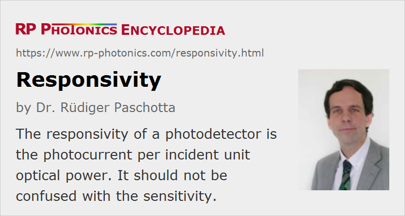

Responsivity
Definition: photocurrent per unit optical power incident on a photodetector
Alternative term: radiant sensitivity
German: Empfindlichkeit
Category: light detection and characterization
How to cite the article; suggest additional literature
Author: Dr. Rüdiger Paschotta
The responsivity (or radiant sensitivity) of a photodiode or some other kind of photodetector is the ratio of generated photocurrent and incident (or sometimes absorbed) optical power (neglecting noise influences), determined in the linear region of response. In the case of photodiodes, the responsivity is typically highest in a wavelength region where the photon energy is somewhat above the band gap energy, and declining sharply in the region of the bandgap, where the absorption decreases. It can be calculated according to
where h ν is the photon energy, η is the quantum efficiency, and e the elementary charge. For example, a photodiode with 90% quantum efficiency at a wavelength of 800 nm, the responsivity would be ≈ 0.58 A/W. For avalanche photodiodes and photomultipliers, there is an additional factor for the internal current multiplication, so that values far above 1 A/W are possible. Note that the current multiplication is usually not subsumed in the quantum efficiency.
Note that the term responsivity cannot be directly applied to photoconductive detectors (photoresistors), where the response to incident light is not a photocurrent proportional to the incident intensity but rather an increase of conductivity – often with a quite nonlinear behavior.
The responsivity is usually defined for the steady state. The photodiode response typically falls off for signal frequencies above some detection bandwidth.
The term sensitivity is often used instead of responsivity, but that is not recommended, since the term can also have other meanings. It should be avoided particularly when a clear quantitative meaning is intended.
A photodetector should ideally be operated in a spectral region where its responsivity is not far below the highest possible value, because this leads to the lowest possible detection noise and thus to a high signal-to-noise ratio and high sensitivity.
If some detector has a voltage rather than a current output, one can define its responsivity as the ratio of output voltage and optical power. This leads to units of V/W (volts per watt). If a photodiode is combined with some detector electronics generating a voltage output, the output voltage is the photocurrent times the so-called transimpedance of the electronics. In the simplest case, one uses a shunt resistor, and the transimpedance is then its resistance.
Thermal detectors usually have a responsivity with a weak wavelength dependence in a broad spectral range – in contrast to photon detectors like photodiodes, where the responsivity typically drops sharply for photon energies around the band gap energy.
Questions and Comments from Users
Here you can submit questions and comments. As far as they get accepted by the author, they will appear above this paragraph together with the author’s answer. The author will decide on acceptance based on certain criteria. Essentially, the issue must be of sufficiently broad interest.
Please do not enter personal data here; we would otherwise delete it soon. (See also our privacy declaration.) If you wish to receive personal feedback or consultancy from the author, please contact him e.g. via e-mail.
By submitting the information, you give your consent to the potential publication of your inputs on our website according to our rules. (If you later retract your consent, we will delete those inputs.) As your inputs are first reviewed by the author, they may be published with some delay.
See also: photodetectors, photodiodes, noise-equivalent power, sensitivity
and other articles in the category light detection and characterization
|  |
If you like this page, please share the link with your friends and colleagues, e.g. via social media:
These sharing buttons are implemented in a privacy-friendly way!